Biscuits personnalisés, décorés un par un
Des biscuits sablés décorés à la main au glaçage royal, dans mon atelier du canton de Fribourg. Vingt et une collections pour les anniversaires, baptêmes, baby showers, mariages et fêtes de l’année — dont les collections d’automne et d’Halloween, commandables en ce moment.

Les collections du moment
Les créations de saison, à commander dès maintenant pour vos tablées d’automne et vos fêtes d’Halloween. Elles se mélangent librement avec toutes les autres collections.

Collection Automne
Une collection aux teintes de saison : terracotta, orange brûlé, blanc cassé et éclats dorés. Feuilles d’érable nervurées, citrouilles, tasses fumantes et petits feuillages, tous décorés à la main au glaçage royal. Les modèles et leurs tarifs arrivent très bientôt ; d’ici là, les photos ci-dessous montrent l’assortiment tel qu’il sort de l’atelier.
- Modèles et tarifs en cours de préparation
- Écrivez-moi pour réserver vos biscuits de saison
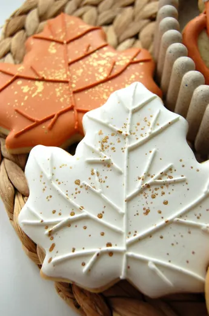


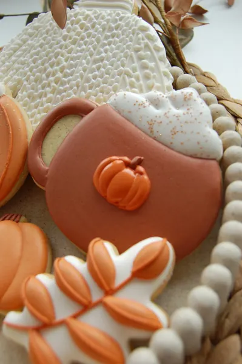
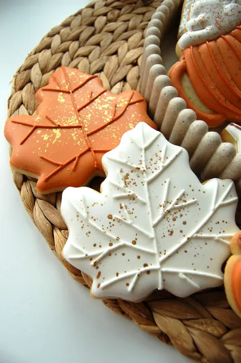
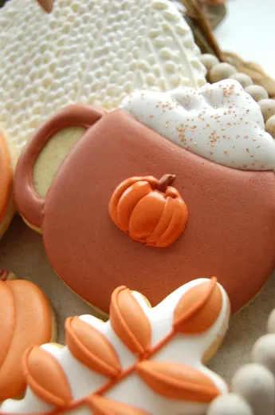
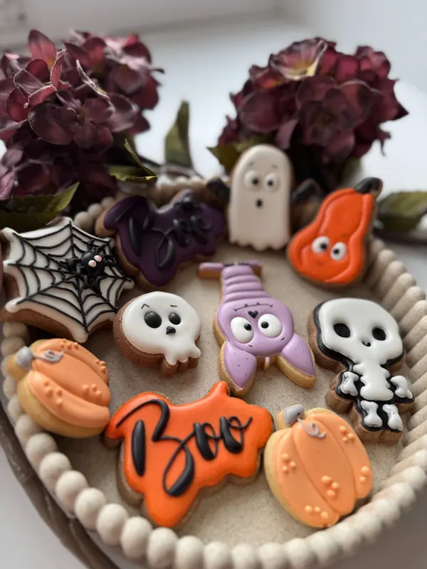
Collection Frissons d’Halloween
Une collection à la fois effrayante et adorable pour célébrer Halloween. Entre citrouilles, petit fantôme, squelette, toile d’araignée et personnages rigolos, chaque biscuit est décoré à la main dans des teintes orange, violet, noir et blanc. Parfaite pour une fête d’Halloween, un goûter d’enfants ou une jolie box gourmande.
- 8 modèles au choix, de 4.50 CHF à 6.50 CHF l’unité
Toutes les collections
Vingt et une collections en tout, pensées chacune pour une occasion. Ouvrez celle qui vous parle, choisissez vos biscuits à l’unité, et complétez avec une autre si vous le souhaitez : le minimum de douze biscuits porte sur l’ensemble de votre panier.
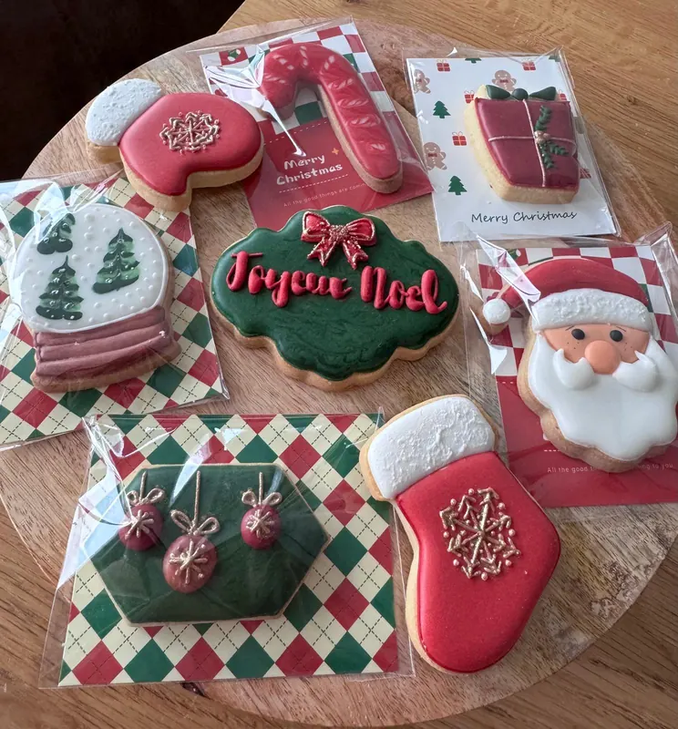
Collection Magie de Noël
Une collection de biscuits aux couleurs chaleureuses et intemporelles de Noël : rouge profond, vert sapin, blanc et petites touches dorées. Entre chaussettes de Noël, sapins, boules scintillantes, flocons et Père Noël, chaque modèle est décoré à la main pour apporter une touche gourmande aux fêtes. Idéale pour offrir, décorer une table de Noël ou composer un joli coffret gourmand.
- 16 modèles au choix, de 5 CHF à 7 CHF l’unité

Collection Douceurs de Pâques
Une collection tendre et colorée pour célébrer Pâques et l’arrivée du printemps. Petits poussins personnalisés, lapin, œufs fleuris, marguerites et carotte se déclinent dans de jolies teintes pastel. Les biscuits peuvent être personnalisés avec un prénom ou un petit message, pour créer un assortiment unique à offrir ou à partager en famille.
- 9 modèles au choix, de 5 CHF à 8 CHF l’unité
- Modèles personnalisables au prénom, à l’âge ou au texte de votre choix

Collection Merci Maîtresse – Bonnes Vacances
Une collection colorée et pleine de bonne humeur pour remercier la maîtresse ou le maître en fin d’année scolaire. Crayons rigolos, petites feuilles de cahier, avions en papier et ardoises composent une jolie attention gourmande pour souhaiter de belles vacances. Les inscriptions peuvent être personnalisées : Merci Maîtresse, Merci Maître, prénom de l’enseignant ou de l’enfant.
- 4 modèles au choix, de 6 CHF à 6.50 CHF l’unité
- Modèles personnalisables au prénom, à l’âge ou au texte de votre choix
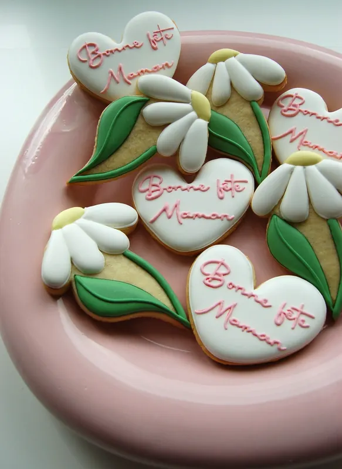
Collection Bonne fête Maman
Une collection douce et fleurie imaginée pour célébrer les mamans avec une petite attention gourmande. Des marguerites aux détails en relief accompagnées de jolis cœurs personnalisés, dans des tons blanc, rose et vert. Une collection idéale pour la Fête des Mères, qui peut également être personnalisée avec un prénom ou un petit message.
- 2 modèles au choix, de 6 CHF à 7 CHF l’unité
- Modèles personnalisables au prénom, à l’âge ou au texte de votre choix
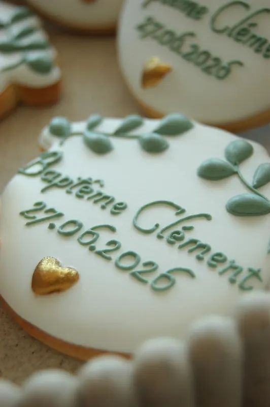
Collection Baptême Douceur
Une collection délicate et naturelle imaginée pour célébrer un baptême tout en élégance. Dans des tons blanc, vert sauge et doré, ce biscuit est personnalisé avec le prénom de l’enfant et la date du baptême, accompagné de feuillages en relief et d’un petit cœur doré. Il peut également être adapté aux couleurs choisies pour l’événement.
- 1 modèle au choix, 7 CHF l’unité
- Modèles personnalisables au prénom, à l’âge ou au texte de votre choix
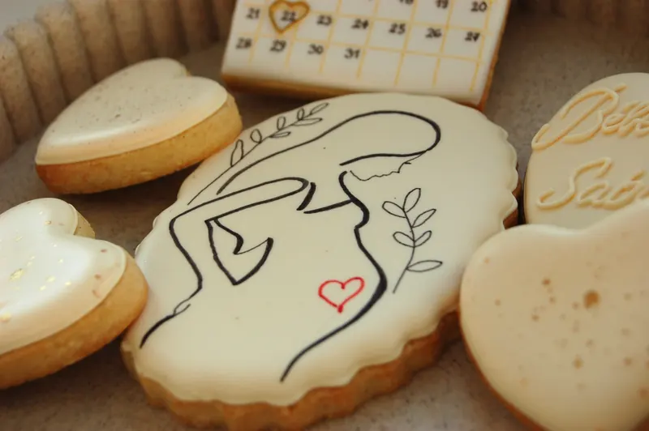
Collection Annonce de grossesse
Une collection douce et élégante imaginée pour annoncer l’arrivée d’un bébé d’une façon originale et gourmande. Dans des tons ivoire, beige et doré, les biscuits peuvent être personnalisés avec le nom de famille, la date prévue de naissance ou un petit message. Une jolie attention pour annoncer une grossesse aux futurs grands-parents, à la famille ou aux proches.
- 5 modèles au choix, de 4 CHF à 7 CHF l’unité
- Modèles personnalisables au prénom, à l’âge ou au texte de votre choix
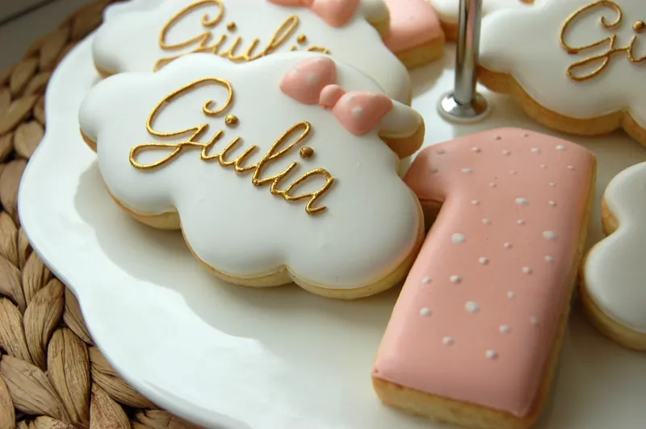
Collection Douceur personnalisée
Une collection douce et élégante dans des tons rose poudré, blanc et doré, parfaite pour célébrer un anniversaire tout en délicatesse. Le biscuit prénom apporte une jolie touche personnalisée, tandis que le chiffre assorti permet d’adapter la collection à chaque âge. Les couleurs, le prénom et le chiffre peuvent être personnalisés.
- 2 modèles au choix, de 6 CHF à 6.50 CHF l’unité
- Modèles personnalisables au prénom, à l’âge ou au texte de votre choix
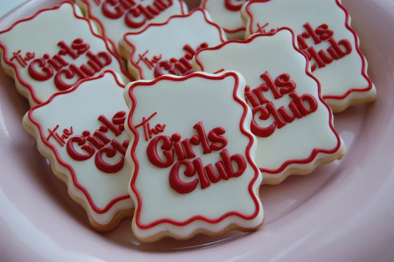
Collection Girls Club – EVJF
Une collection pétillante et féminine imaginée pour célébrer un enterrement de vie de jeune fille entre copines. Des biscuits personnalisés parfaits pour compléter une table, un brunch ou un petit cadeau souvenir pour chaque participante. Les couleurs et inscriptions peuvent être adaptées au thème de l’EVJF.
- 1 modèle au choix, 6 CHF l’unité
- Modèles personnalisables au prénom, à l’âge ou au texte de votre choix
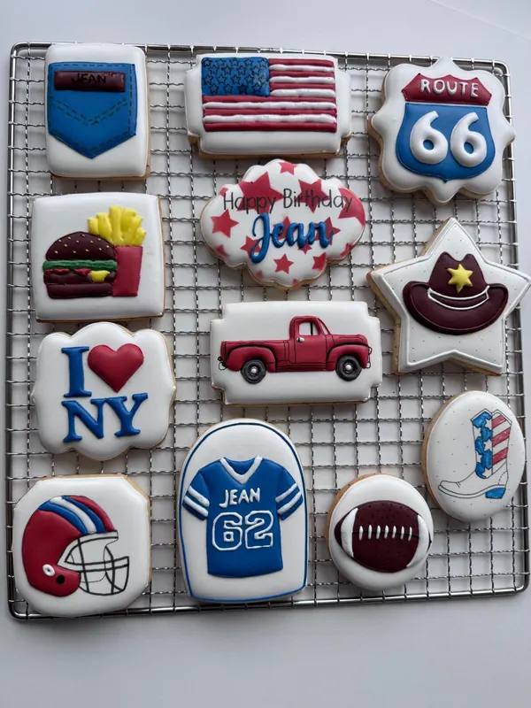
Collection American Road Trip
Une collection aux couleurs des États-Unis, inspirée de la mythique Route 66, de New York et de l’univers américain : pick-up vintage, football américain, cowboy et détails personnalisés. Une collection idéale pour un anniversaire ou une fête sur le thème USA, personnalisable avec le prénom et l’âge.
- 12 modèles au choix, de 6 CHF à 7 CHF l’unité
- Modèles personnalisables au prénom, à l’âge ou au texte de votre choix
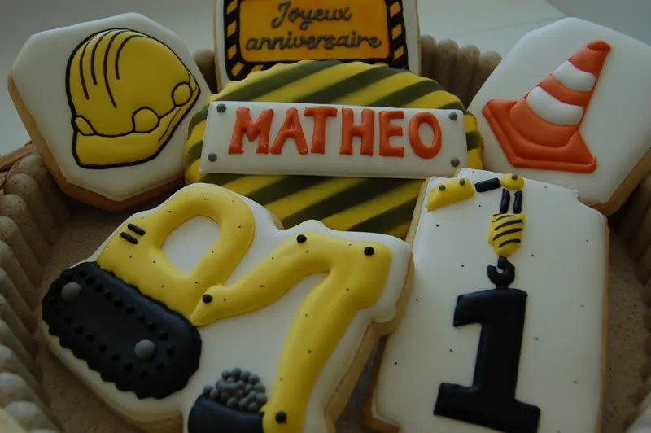
Collection Petit Chantier
Une collection pleine d’énergie pour les petits passionnés de chantier et de gros engins, dans les incontournables tons jaune, noir, gris et orange. Personnalisable avec le prénom et l’âge de l’enfant pour un anniversaire sur le thème de la construction.
- 9 modèles au choix, de 5 CHF à 7 CHF l’unité
- Modèles personnalisables au prénom, à l’âge ou au texte de votre choix

Collection Passion Cheval
Une collection tendre et élégante inspirée de l’univers équestre, dans des nuances de rose poudré, blanc, beige et brun. Personnalisable avec le prénom et l’âge de l’enfant, idéale pour les petits passionnés de chevaux.
- 10 modèles au choix, de 4 CHF à 8 CHF l’unité
- Modèles personnalisables au prénom, à l’âge ou au texte de votre choix

Collection Petit Océan
Une collection pleine de douceur inspirée des fonds marins, dans de jolies nuances de bleu, turquoise, corail et vert. Personnalisable avec le prénom et l’âge de l’enfant, parfaite pour un anniversaire sur le thème de la mer.
- 9 modèles au choix, de 4 CHF à 7 CHF l’unité
- Modèles personnalisables au prénom, à l’âge ou au texte de votre choix

Collection Rêve de Licorne
Une collection féerique et délicate aux nuances de rose poudré, blanc et lilas, sublimée par de fines touches dorées. Personnalisable avec le prénom et l’âge de l’enfant pour un anniversaire tout en douceur.
- 4 modèles au choix, de 5 CHF à 8 CHF l’unité
- Modèles personnalisables au prénom, à l’âge ou au texte de votre choix
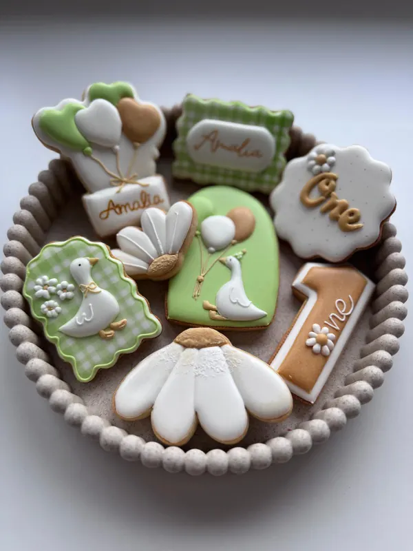
Collection Petite Oie
Une collection douce et champêtre aux tons naturels, entièrement personnalisable pour un premier anniversaire, un anniversaire ou une baby shower.
- 8 modèles au choix, de 4 CHF à 8 CHF l’unité
- Modèles personnalisables au prénom, à l’âge ou au texte de votre choix

Collection Petit Lapin au Jardin
Une collection douce et champêtre inspirée de l’univers du petit lapin et de son potager, dans de jolies nuances de bleu, beige, orange et vert tendre. Personnalisable avec l’initiale, le prénom ou l’âge de l’enfant, parfaite pour un anniversaire, un baptême ou une baby shower.
- 5 modèles au choix, de 4 CHF à 8 CHF l’unité
- Modèles personnalisables au prénom, à l’âge ou au texte de votre choix
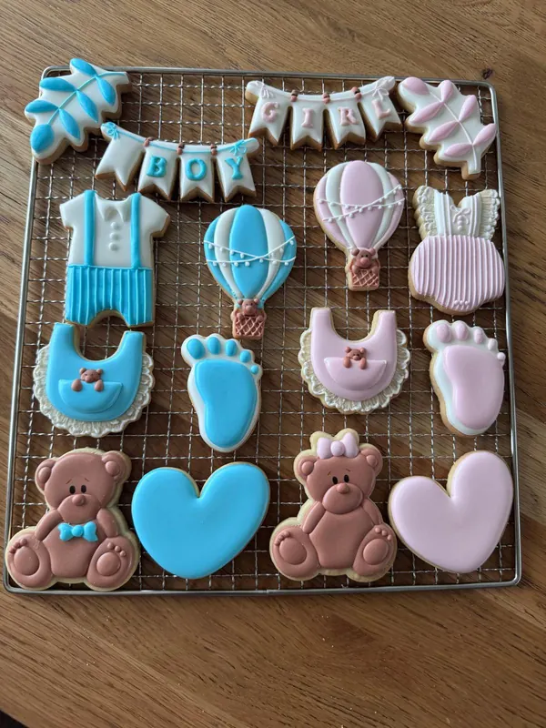
Collection Gender Reveal
Une collection pleine de tendresse pour célébrer une gender reveal. Des petits oursons, montgolfières, empreintes et accessoires de bébé déclinés dans de doux tons rose poudré, bleu ciel, blanc et brun.
- 8 modèles au choix, de 5 CHF à 7 CHF l’unité
- Modèles personnalisables au prénom, à l’âge ou au texte de votre choix
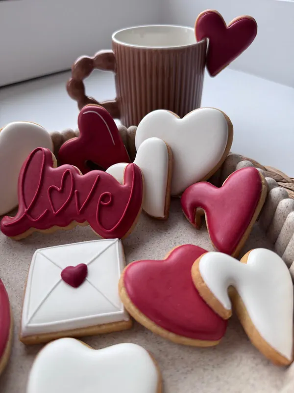
Collection Saint-Valentin
Une collection douce et romantique autour de l’amour, composée de cœurs aux différentes formes et dimensions, d’une enveloppe cachetée et d’un biscuit « Love ». Déclinée dans des tons blanc, rose et framboise, elle est parfaite pour la Saint-Valentin, une demande spéciale, un mariage ou simplement pour offrir un petit message d’amour.
- 4 modèles au choix, de 4 CHF à 6 CHF l’unité
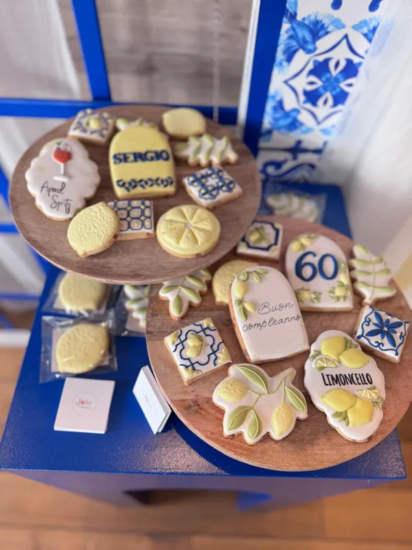
Collection Dolce Vita
Une collection lumineuse et raffinée inspirée de l’Italie et de la douceur de vivre méditerranéenne. Citrons, feuillages, faïences aux motifs bleus et petites touches personnalisées composent un univers frais et élégant, idéal pour un anniversaire adulte, une fête estivale ou une célébration sur le thème de l’Italie.
- 11 modèles au choix, de 4 CHF à 7 CHF l’unité
- Modèles personnalisables au prénom, à l’âge ou au texte de votre choix

Collection Moto
Une collection dynamique pour les passionnés de moto, de vitesse et d’aventure. Entre circuits, drapeaux à damier, casques et panneaux de voyage, chaque biscuit peut être personnalisé avec le prénom, l’âge et un petit message pour un anniversaire sur mesure.
- 9 modèles au choix, de 5 CHF à 6 CHF l’unité
- Modèles personnalisables au prénom, à l’âge ou au texte de votre choix
Une idée qui ne figure dans aucune collection ? Les biscuits personnalisés se créent aussi entièrement sur mesure. Demandez un devis en décrivant votre thème et vos couleurs.
Vous souhaitez découvrir d’autres créations ?
Ces vingt et une collections ne sont qu’une partie de ce que je décore. Anniversaires, baptêmes, naissances, entreprises : la galerie rassemble mes biscuits personnalisés déjà réalisés, classés par occasion et par thème. De quoi trouver l’idée, ou m’en confier une nouvelle.
Voir mes réalisations


Ingrédients & conservation
Biscuit
Beurre, farine, sucre glace, œuf, sel de Guérande, extrait de vanille.
Glaçage
Sucre glace, poudre de blanc d’œuf (peut contenir des traces de lait et de fruits à coque), colorant alimentaire.
Conservation
- À consommer dans les 6 semaines dans son sachet d’origine.
- À conserver dans un endroit sec, à l’abri de la lumière et de l’humidité.
Ne pas mettre au réfrigérateur.
L’humidité ferait perdre au glaçage sa tenue et son éclat.Découvrez aussi mes micro-scénographies
Pour les événements qui méritent un petit décor en plus des biscuits, découvrez mes trois formules de micro-scénographie.